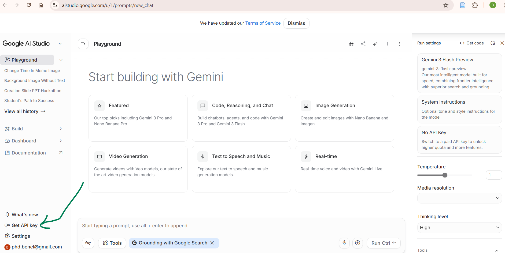
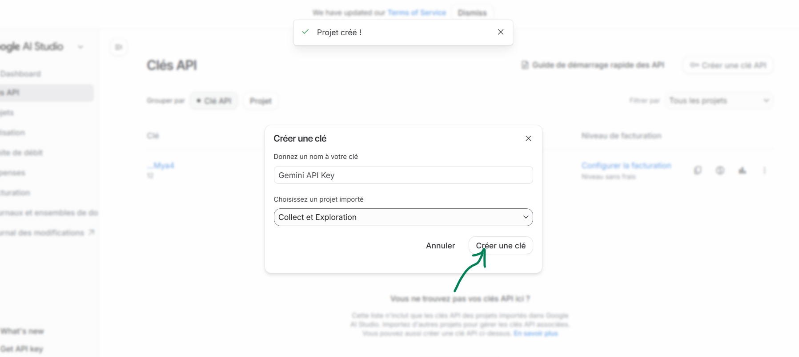
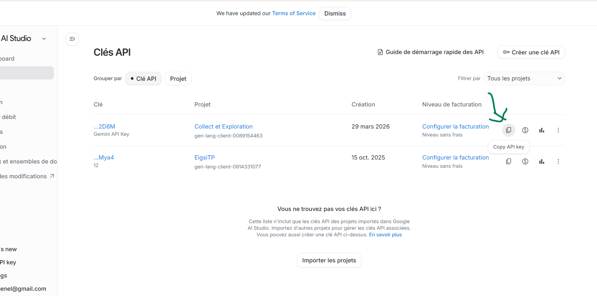

Phase 2 : De la « Matière Brute » à l'Intelligence Décisionnelle
Félicitations ! Votre Data Lake (la Zone Bronze) est désormais une réalité physique. Votre infrastructure de stockage reflète une base solide de données brutes prête à être exploitée :
/ImmoVision360_Project
├── /data
│ └── /raw <-- Zone "Bronze" (Données Brutes)
│ ├── /tabular
│ │ ├── listings.csv <-- +70 colonnes, format brut
│ │ └── reviews.csv
│ ├── /images/ <-- Milliers de fichiers [ID].jpg
│ └── /texts/ <-- Milliers de fichiers [ID].txt
├── /scripts
│ ├── 00_data.ipynb
│ ├── 01_ingestion_images.py
│ ├── 02_ingestion_textes.py
│ └── 03_sanity_check.py
└── README.mdCependant, en l'état, ces données sont massives, désorganisées et « muettes ». Un fichier CSV de 70 colonnes, des milliers de photos éparpillées et des blocs de commentaires bruts ne permettent pas de prendre des décisions politiques.
L'objectif de cette deuxième phase est d'opérer une mutation majeure : transformer votre Data Lake (non structuré et lourd) en un véritable Data Warehouse sous PostgreSQL. Vous allez créer la Zone Silver : un environnement ultra-structuré, typé et requêtable en temps réel.

Pour orchestrer cette métamorphose sans créer un code monolithique et illisible, nous adoptons un pipeline découpé en trois scripts distincts, autonomes et spécialisés.
1. 04_extract.py : le filtre stratégique
Son rôle est d'ouvrir la porte du Data Lake pour trier « le grain de l'ivraie ». Sur les 70 colonnes du CSV initial, seules quelques-unes portent le signal utile pour la Maire.
2. 05_transform.py : l'alchimie des données
C'est ici que s'opère la véritable valeur ajoutée. Ce script nettoie les données filtrées et les enrichit.
- Action : nettoyage des valeurs manquantes (
NaN) et feature engineering multimodal. Vous transformez les images (.jpg) et les textes (.txt) en nouvelles colonnes numériques (scores de standardisation, sentiment, nuisances).
3. 06_load.py : l'ancrage relationnel
C'est le point d'aboutissement du pipeline. La donnée quitte le monde volatil des fichiers CSV pour rejoindre la rigueur du SQL.
- Action : injection propre du fichier « Silver » transformé dans une table PostgreSQL parfaitement typée.
- Résultat : un entrepôt de données prêt pour les requêtes complexes et la visualisation finale.
En séparant l'extraction, la transformation et le chargement, vous garantissez la maintenance et l'évolutivité de votre projet. Chaque étape est documentée, logguée et surtout idempotente : vous pouvez relancer le pipeline sans jamais corrompre votre base de données.
Voici l'arborescence cible une fois la Zone Silver et les scripts ETL en place :
/ImmoVision360_Project
├── /data
│ ├── /raw <-- Zone "Bronze" (Inchangée)
│ │ ├── /tabular
│ │ │ ├── listings.csv
│ │ │ └── reviews.csv
│ │ ├── /images/ <-- [ID].jpg
│ │ └── /texts/ <-- [ID].txt
│ │
│ └── /processed <-- Zone "Silver" (NOUVEAU)
│ ├── filtered_elysee.csv <-- Généré par 0.4_extract.py
│ └── transformed_elysee.csv <-- Généré par 0.5_transform.py
│
├── /scripts
│ ├── 01_ingestion_images.py
│ ├── 02_ingestion_textes.py
│ ├── 03_sanity_check.py
│ ├── 04_extract.py <-- Filtrage & Sélection métier (Pandas)
│ ├── 05_transform.py <-- IA : Image2Feature & Text2Feature
│ └── 06_load.py <-- Injection PostgreSQL (SQLAlchemy)
│
├── .env <-- Config (DB_USER, DB_PASSWORD)
├── .gitignore <-- Exclut /data/* et .env
├── README_DATALAKE.md <-- Description du Data Lake (brut/processed, conventions)
├── README_EXTRACT.md <-- Justification du choix d'extraction (features & hypothèses)
├── README_TRANSFORM.md <-- Justification & description des transformations (CSV + images .jpg + textes .txt)
├── README_DATAPROFILIING.md <-- Profiling sur filtered_elysee.csv (NaN, min/max, outliers)
├── README_LOAD.md <-- Documentation du chargement (PostgreSQL, table, méthode, idempotence)
└── README.md <-- Documentation du Pipeline
Les sections suivantes du support détaillent le développement de chaque script (04_extract, 05_transform, 06_load) dans l'ordre du pipeline.
04_extract : la stratégie de sélection des données
L'extraction est l'étape où l'ingénieur de données exerce son esprit critique. Le fichier listings.csv que vous avez ingéré contient plus de 70 colonnes. Stocker l'intégralité de ces données dans votre Data Warehouse serait une erreur stratégique : cela ralentit les calculs, sature la mémoire et brouille l'analyse.
Avant de coder, il faut cartographier la richesse du gisement de données. Voici une description des features du fichier listings.csv :
Description des colonnes de listings.csv (cliquer pour développer)
1. Identifiants et liens (IDs & URLs)
id: identifiant unique de l'annonce.listing_url: lien direct vers l'annonce sur Airbnb.scrape_id: identifiant interne de la session de collecte de données.last_scraped: date de la dernière extraction.source: origine de l'annonce (ex. « city scrape »).picture_url: URL de la photo principale.
2. Informations sur l'hôte (Host)
host_id: identifiant de l'hôte.host_url/host_name: profil et nom de l'hôte.host_since: date d'arrivée de l'hôte sur Airbnb.host_location/host_about: localisation et biographie.host_response_time/host_response_rate: réactivité aux messages.host_acceptance_rate: taux d'acceptation des demandes.host_is_superhost: statut de Superhost (t/f).host_thumbnail_url/host_picture_url: photos de profil.host_neighbourhood: quartier de l'hôte.host_listings_count/host_total_listings_count: nombre d'annonces de l'hôte.host_verifications: méthodes de vérification (email, téléphone, etc.).host_has_profile_pic/host_identity_verified: indicateurs de confiance.
3. Localisation et description du bien (Location & Description)
name/description: nom et descriptif commercial.neighborhood_overview: présentation du quartier par l'hôte.neighbourhood/neighbourhood_cleansed: nom du quartier (brut et nettoyé).neighbourhood_group_cleansed: groupe de quartiers (souvent vide pour Paris).latitude/longitude: coordonnées GPS exactes.property_type: type de bien (appartement, loft, etc.).room_type: type de location (logement entier, chambre partagée, etc.).
4. Caractéristiques physiques (Amenities & Capacity)
accommodates: nombre de voyageurs maximum.bathrooms/bathrooms_text: détails sur les salles de bain.bedrooms/beds: nombre de chambres et de lits.amenities: liste JSON des équipements (Wi-Fi, cuisine, etc.).price: prix par nuitée.
5. Règles et séjour (Booking Rules)
minimum_nights/maximum_nights: limites de durée de séjour.minimum_minimum_nights/maximum_minimum_nights: variantes de séjours minimums.minimum_maximum_nights/maximum_maximum_nights: variantes de séjours maximums.minimum_nights_avg_ntm/maximum_nights_avg_ntm: moyennes de durées de séjour.
6. Disponibilité (Availability)
calendar_updated: dernière mise à jour du calendrier.has_availability: disponibilité actuelle (t/f).availability_30/60/90/365: disponibilité sur les X prochains jours.calendar_last_scraped: date du dernier scrap du calendrier.
7. Avis et évaluation (Reviews)
number_of_reviews: volume total de commentaires.number_of_reviews_ltm/l30d: commentaires récents (12 mois / 30 jours).first_review/last_review: dates de début et de fin des avis.review_scores_rating: note globale (sur 5).review_scores_accuracy/cleanliness/checkin/communication/location/value: notes détaillées par critère.reviews_per_month: moyenne mensuelle de commentaires.
8. Gestion et réglementation
license: numéro d'enregistrement légal.instant_bookable: réservation instantanée activée (t/f).calculated_host_listings_count: nombre d'annonces gérées par l'hôte (total, logements entiers, chambres privées/partagées).
Pour répondre à la Maire de Paris, nous n'allons pas « tout » garder. Nous allons sélectionner uniquement les colonnes qui servent de carburant à nos trois hypothèses majeures.
A. Hypothèse économique : la concentration des biens
Question : est-ce une économie de partage ou une industrie hôtelière masquée ?
- Features à extraire :
calculated_host_listings_count(détecteur de multipropriétés),price,property_type,room_typeetavailability_365. - Indice de preuve : si 5 % des hôtes contrôlent 60 % des biens du quartier, vous prouvez une gestion industrielle.
B. Hypothèse sociale : la déshumanisation de l'accueil (lien social)
Question : le lien social se brise-t-il au profit de processus automatisés ?
Le cœur de la preuve viendra des fichiers .txt (commentaires agrégés) et du NLP en phase transform. En complément, vous pouvez conserver dans l'extract des indicateurs tabulaires utiles : host_response_time et host_response_rate — les agences ou acteurs professionnels ont souvent des taux de réponse proches de 100 % avec des délais très courts (gestion professionnelle), ce qui peut trancher avec un hôte « résident » plus irrégulier.
C. Hypothèse visuelle : la standardisation « Airbnb-style »
Question : les logements sont-ils devenus des produits financiers stériles ?
Aucune feature intéressante dans le CSV seul : nous utiliserons les images pour créer une feature au moment du transform.
Implémentation technique : créer le DataFrame filtré
Le script 0.4_extract.py doit effectuer cette sélection de manière propre et répétable (idempotence).
Étapes du script :
- Chargement : lire le fichier
data/raw/tabular/listings.csv. - Sélection : définir une liste de colonnes
COLS_TO_KEEPbasée sur la réflexion métier ci-dessus. - Filtrage géographique : ne traiter que le quartier de l'Élysée (même logique que en Phase 1).
- Sauvegarde : exporter le résultat dans
data/processed/filtered_elysee.csv.
Dans votre script, gardez des commentaires courts (ex: à quelle hypothèse se rattache une colonne). La documentation complète — qui justifie le pourquoi du choix des features et comment elles alimentent les hypothèses — se fait dans README_EXTRACT.md.
05_Transform : l'alchimie et l'enrichissement par l'IA
Cette partie insiste sur l'importance de l'exploration des données (EDA — Exploratory Data Analysis) et du profiling avant de lancer des pipelines de transformation automatiques. L'objectif est de métamorphoser votre fichier filtré en une base propre et « intelligente », enrichie par l'IA — sans jamais transformer à l'aveugle. Règle d'or : comprendre ses données, puis coder.
1. L'exploration : comprendre avant d'agir (data profiling)
Avant de rédiger votre script 0.5_transform.py (équivalent logique 05_transform.py), prenez le temps d'explorer vos données. Utilisez votre notebook 00_data.ipynb (ou de petits scripts d'exploration annexes) pour auditer l'état de santé du jeu de données.
Que devez-vous chercher ?
- Les valeurs aberrantes (outliers) : un appartement à 0 € la nuit ? Ou à 15 000 € ?
- Les formats incohérents : le prix est-il un nombre exploitable ou une chaîne avec symbole monétaire (ex.
"$120.00") ? - Les valeurs manquantes (
NaN) : quel pourcentage de cellules est vide ?
Théorie : que faire face aux valeurs manquantes ?
Face à des features manquantes, trois stratégies classiques :
- La suppression (drop) : si une donnée critique (
price, identifiant, etc.) manque, la ligne peut devenir inutile — on la retire. - L'imputation statistique : remplacer le vide par la moyenne ou la médiane de la colonne (ex. notes
review_scores) sans trop fausser la distribution. - L'imputation logique : donner du sens au vide. Ex. si
reviews_per_monthest vide car le logement est neuf, remplacer leNaNpar0peut être la décision la plus juste.
Livrable obligatoire — README_DATAPROFILIING.md : documentez votre audit du fichier filtré
data/processed/filtered_elysee.csv. L'objectif est de prouver que vous avez compris vos données
avant d'écrire un pipeline automatique.
- Données manquantes : quelles colonnes contiennent des
NaN? Quel pourcentage par colonne ? - Statistiques : min / max (et idéalement médiane) pour chaque feature numérique.
- Valeurs aberrantes (outliers) : exemples concrets détectés (prix à 0 €, prix extrêmes, disponibilités incohérentes, etc.).
- Formats & types : quelles colonnes doivent être converties (ex.
priceenfloat) ? - Décisions : quelles règles vous choisissez ensuite (drop / imputation / cap) et pourquoi.
2. Le script de production (0.5_transform.py)
Une fois le diagnostic posé à l'exploration, vous codez le script final. Il automatise deux grandes étapes : le nettoyage de base et la création de nouvelles features propulsées par l'IA.
A. Nettoyage et normalisation
C'est le « repassage » de la donnée. Votre script applique systématiquement vos règles :
- convertir les prix en nombres réels (
float) ; - gérer les
NaNselon une stratégie choisie ; - plafonner ou supprimer les valeurs aberrantes pour ne pas fausser les analyses pour la Maire de Paris.
B. Enrichissement multimodal par l'IA (inférence)
Une fois la base saine, vous lui donnez une profondeur analytique : deux nouvelles colonnes (features) via l'API Google AI Studio et le modèle gemini-2.5-flash.
API Google AI Studio (accès + étapes) — voir détails
L'API Google AI Studio est accessible via https://aistudio.google.com/.
Suivez les étapes ci-dessous pour activer l'accès et récupérer votre clé API.



Important : ne mettez jamais votre clé en dur dans un script versionné. Utilisez des variables d'environnement (ex. .env) et ajoutez .env dans .gitignore.
Feature 1 — « Standardization Score » (image → texte)
L'IA « voit » chaque image pour estimer si le logement a une âme résidentielle ou ressemble à une chambre d'hôtel standardisée. La réponse est intégrée dans une nouvelle colonne, par exemple Standardization_Score (ou équivalent encodé numériquement selon votre grille).
import google.generativeai as genai
import PIL.Image
# Configuration de la clé API (préférez une variable d'environnement en production)
genai.configure(api_key="VOTRE_CLE_API_ICI")
model = genai.GenerativeModel("gemini-2.5-flash")
img = PIL.Image.open("data/raw/images/ID_123.jpg")
prompt = """
Analyse cette image et classifie-la strictement dans l'une de ces catégories :
- 'Appartement industrialisé' (Déco minimaliste, style catalogue, standardisé, froid)
- 'Appartement personnel' (Objets de vie, livres, décoration hétéroclite, chaleureux)
- 'Autre' (Si l'image ne montre pas l'intérieur d'un logement)
Réponds uniquement par le nom de la catégorie.
"""
response = model.generate_content([prompt, img])
print(response.text) # Cette valeur alimente votre nouvelle colonneMappez la sortie du modèle vers votre colonne Standardization_Score (catégorie ou score numérique selon votre choix).
Exemple de mapping (catégorie → score) : pour faciliter les statistiques et les requêtes SQL, vous pouvez convertir la catégorie texte en un score numérique simple :
1 = Appartement industrialisé (standardisé, “Airbnb-style”) •
0 = Appartement personnel (habité, objets de vie) •
-1 = Autre / aberrant (photo non pertinente, corrompue, ou réponse non exploitable).
Point d'attention (remarque) — quotas, robustesse et optimisation du traitement massif
Passer d'une démonstration sur 5 images à un traitement industriel sur un dataset réel (ex: 2 600 images) confronte l'ingénieur à une réalité incontournable : les limites structurelles des API de modèles de langage (LLM). Sans une stratégie de robustesse, votre pipeline s'effondrera dès les premières minutes.
1. Le mur du quota : comprendre l'erreur 429 Resource Exhausted
Dans sa version gratuite (Free Tier), Gemini 2.5 Flash impose des restrictions strictes. L'erreur 429 survient typiquement quand vous dépassez :
- RPM (Requests Per Minute) : le débit instantané (ex. 15 requêtes/minute).
- RPD (Requests Per Day) : le volume total quotidien (ex. 1 500 requêtes/jour).
Constat : pour traiter 2 600 images, un script séquentiel naïf (1 image = 1 requête) échouera mathématiquement sur le quota journalier, et/ou sera ralenti par le quota minute.
2. Stratégies de résilience et robustesse du code
Pour garantir un traitement intégral sans interruption humaine, votre script doit intégrer trois mécanismes : temporisation, gestion des exceptions et logique de retry.
Implémentation : fonction de résilience (exponential backoff)
import time
import PIL.Image
import google.api_core.exceptions as exceptions
def classify_with_resilience(image_path, model, prompt, max_retries=3):
\"\"\"
Tente la classification avec gestion de quota et fallback.
\"\"\"
for attempt in range(max_retries):
try:
img = PIL.Image.open(image_path)
response = model.generate_content([prompt, img])
return response.text.strip()
except exceptions.ResourceExhausted:
# Quota RPM atteint : attendre pour laisser le quota se réinitialiser
wait_time = 60
print(f\"Quota RPM atteint. Pause de {wait_time}s...\")
time.sleep(wait_time)
except exceptions.InvalidArgument:
print(f\"Image corrompue ou format invalide : {image_path}\")
return \"Format Error\"
except Exception as e:
print(f\"Tentative {attempt + 1} échouée : {e}\")
time.sleep(2 ** attempt) # backoff exponentiel
return \"Timeout/Error\"3. Recommandations pour le déploiement « industriel »
Pour mener à bien le traitement complet, appliquez ces trois principes de production.
A. Système de checkpoints (sauvegarde progressive)
- Ne stockez pas tout en mémoire : si le script plante à l'image 1 500, vous perdez des heures.
- Sauvegarde : écrivez vos résultats dans un CSV intermédiaire toutes les 50 lignes (ou N lignes).
- Reprise à froid : au démarrage, détectez les IDs déjà traités pour ne calculer que les manquants (économie de quota et de temps).
B. Optimisation par batching (regroupement)
Gemini dispose d'une grande fenêtre de contexte. Au lieu d'envoyer 1 image par requête (1 RPM), vous pouvez en envoyer 10 (ou plus) et demander un résultat structuré.
Exemple de prompt (sortie JSON attendue)
« Voici 10 images numérotées de 1 à 10. Classifie chacune selon les catégories définies. Réponds au format JSON :
{\"1\": \"catégorie\", \"2\": \"catégorie\", ...}. »
Gain : vous divisez la consommation de quota par ~10 (à condition de parser proprement la sortie).
C. Stratégie multi-modèles (fallback)
- Plan A : Gemini 2.5 Flash (rapide, gratuit).
- Plan B : si le quota journalier est épuisé, basculer vers une autre API/modèle (ou une autre clé) pour terminer le traitement.
Règle de production : votre pipeline doit être idempotent, reprenable, et parcimonieux en appels LLM. Documentez votre stratégie (quotas, checkpoints, batching) dans README_TRANSFORM.md.
Feature 2 — « Neighborhood Impact » (texte → texte)
Les fichiers .txt agrègent les commentaires voyageurs : l'expérience vécue. Utilisez le même modèle (gemini-2.5-flash) en lui passant le contenu du fichier texte pour classer le type d'expérience attendu : « Hôtélisé » (boîte à clés, consignes professionnelles, peu de contact humain) vs « Voisinage naturel » (rencontre avec l'hôte, conseils de quartier, vie locale).
Mappez la sortie du modèle vers votre colonne Neighborhood_Impact (catégorie ou score numérique selon votre choix pédagogique).
L'exécution de 0.5_transform.py doit parcourir chaque ligne de la base filtrée, appeler l'IA pour chaque image et chaque texte associés, puis consolider le tout dans un fichier unique :
data/processed/transformed_elysee.csv
Remarque importante : certaines annonces n'ont pas d'image et/ou pas de commentaires. Dans ce cas, votre pipeline ne doit pas planter. Vous devez renseigner une valeur par défaut (ex. -1) dans les colonnes IA correspondantes (ex. Standardization_Score et/ou Neighborhood_Impact) afin de garder une table finale complète et exploitable.
06_Load : l'ancrage dans le Data Warehouse (PostgreSQL)
Vous avez extrait le signal du bruit et enrichi vos données grâce à l'intelligence artificielle. Votre fichier transformed_elysee.csv concentre l'information utile.
Dans l'ingénierie de données professionnelle, un fichier CSV n'est pas une finalité : c'est un format de transit. Pour que la Maire de Paris puisse interroger ces données, croiser les quartiers et brancher des tableaux de bord (Tableau, Power BI, etc.), la donnée doit quitter le monde volatil des fichiers plats pour entrer dans le sanctuaire du Data Warehouse : une base de données relationnelle. Nous utilisons PostgreSQL, référence industrielle largement adoptée.
1. Sécurité et bonnes pratiques : le fichier .env
Avant la première ligne de connexion à la base, une règle absolue en entreprise : on ne code jamais un mot de passe en dur dans un script. Publier des identifiants sur un dépôt Git expose le système à une faille majeure.
Solution : les variables d'environnement.
- Créez un fichier
.envà la racine du projet (et vérifiez qu'il est bien ignoré par Git via.gitignore). - Y placer les identifiants, par exemple :
DB_USER=postgres
DB_PASSWORD=mon_mot_de_passe_secret
DB_HOST=localhost
DB_PORT=5432
DB_NAME=immovision_db
Dans 0.6_load.py, utilisez la librairie python-dotenv (load_dotenv()) pour charger ces valeurs de façon sécurisée, sans les afficher dans le code versionné.
2. Le pont entre Python et PostgreSQL : SQLAlchemy
Pour envoyer votre DataFrame vers PostgreSQL, on évite d'écrire des INSERT ligne à ligne à la main. On utilise un ORM — SQLAlchemy — qui fait le lien entre Pandas (Python) et le moteur SQL.
Cœur possible de 0.6_load.py :
import pandas as pd
from sqlalchemy import create_engine
import os
from dotenv import load_dotenv
# 1. Chargement des variables de sécurité
load_dotenv()
user = os.getenv("DB_USER")
password = os.getenv("DB_PASSWORD")
host = os.getenv("DB_HOST", "localhost")
port = os.getenv("DB_PORT", "5432")
dbname = os.getenv("DB_NAME", "immovision_db")
# 2. Lecture de la Zone Silver
df_silver = pd.read_csv("data/processed/transformed_elysee.csv")
# 3. Création du moteur de connexion (le « tuyau »)
engine = create_engine(
f"postgresql://{user}:{password}@{host}:{port}/{dbname}"
)
# 4. L'injection (Load)
df_silver.to_sql(
"elysee_listings_silver",
engine,
if_exists="replace",
index=False,
)
print("Données chargées avec succès dans le Data Warehouse.")3. Le pilier de l'idempotence : if_exists='replace'
Un pipeline doit pouvoir être relancé chaque jour (ou plus souvent) sans casser le système : c'est l'idempotence. Si vous réexécutez 0.6_load.py :
- le script ne doit pas échouer parce que la table existe déjà ;
- il ne doit pas dupliquer les mêmes lignes indéfiniment.
L'argument if_exists='replace' fait recréer la table à chaque exécution avec les données les plus récentes. En production avancée, on pourrait préférer un UPSERT (mise à jour incrémentale) ; pour ce projet, le replace est un bon compromis pédagogique.
Après exécution du script, votre mission d'ingénierie sur cette phase est bouclée : la table elysee_listings_silver vit dans PostgreSQL. Chaque ligne représente un logement avec des types stricts (prix numériques, booléens réels, etc.) et les colonnes enrichies par l'IA (par ex. scores de type standardization_score, neighborhood_impact ou social_impact_score selon votre nommage dans transformed_elysee.csv).
Le terrain est prêt pour la Phase 3 — visualisation et analyse : cartes, graphiques et récit décisionnel pour la Maire.
Phase 2 bouclée : Extract → Transform → Load — du Data Lake à une base relationnelle exploitable et requêtable.
Livrable de la Phase 2 : dépôt GitHub et README à jour
La Phase 2 se conclut par une remise professionnelle : votre travail doit être versionné, documenté et vérifiable. Le livrable attendu est un lien vers un dépôt Git (idéalement GitHub) reflétant l'arborescence du projet et l'état d'avancement réel du pipeline — pas seulement du code isolé.
Ce que le dépôt doit contenir (minimum)
- La structure de dossiers alignée avec le projet (dossiers
data/raw,data/processed,scripts, fichiers.gitignore,README.md; le fichier.envne doit jamais être commité — uniquement un exemple.env.examplesans secrets). - Les documents de justification :
README_DATALAKE.md,README_EXTRACT.md(choix d'extraction & mapping hypothèses/features),README_DATAPROFILIING.md(profiling surfiltered_elysee.csv),README_TRANSFORM.md(transformations CSV + images.jpg+ textes.txt) etREADME_LOAD.md(chargement vers PostgreSQL / Data Warehouse). - Les scripts de la chaîne ETL :
0.4_extract.py,0.5_transform.py,0.6_load.py(et, si applicable, les scripts Phase 1 déjà intégrés au même repo). - Un
README.mdà jour, rédigé pour un ingénieur qui ne connaît pas votre machine : contexte, prérequis, ordre d'exécution, variables d'environnement, résultats attendus (fichiers Silver et schéma SQL).
Preuve que PostgreSQL est bien en place
Le README_LOAD doit inclure une capture d'écran prouvant que le Data Warehouse existe : par exemple la base immovision_db (ou le nom que vous avez configuré) et la présence de la table elysee_listings_silver — vue depuis pgAdmin, DBeaver, l'outil de votre choix, ou une session psql listant les tables. L'image ne remplace pas un script fonctionnel : elle atteste que le Load a été exécuté avec succès dans un environnement réel.
Comment intégrer l'image dans le README sur GitHub
- Ajoutez l'image dans le dépôt, par exemple
docs/screenshots/postgres_data_warehouse.png(créez les dossiers si besoin). - Dans
README.md, référencez-la en Markdown :
 - Alternative : éditez le
README.mddirectement sur GitHub (bouton « crayon ») et glissez-déposez la capture dans l'éditeur : GitHub insère souvent le lien ou le chemin relatif automatiquement.
Lien à fournir : URL du dépôt Git (ex. https://github.com/<votre-compte>/ImmoVision360-Project) avec la dernière structure et un README à jour au moment de la remise. Remplacez l'exemple par votre URL réelle.
À lire :
Compte tenu du temps imparti et des limitations de quota des API (services externes), il ne vous est pas demandé de transformer l'intégralité des images et des textes en features réelles pour le moment.
Consignes pour cette étape :
- Génération de données fictives : pour les colonnes issues de la Vision (Standardization_Score) et du NLP (Neighborhood_Impact), veuillez remplir les champs avec des valeurs aléatoires (choisissez parmi : 1, 0 ou -1).
- Intégration base de données : chargez l'ensemble de votre dataset (incluant ces valeurs aléatoires) dans une base de données PostgreSQL.
- Livrables : documentez votre processus dans le README et prenez des screenshots de votre base de données remplie pour prouver le bon fonctionnement du pipeline.
Ne vous inquiétez pas pour la cohérence des données : je vous fournirai la base de données nettoyée et correcte pour la prochaine phase dédiée à l'EDA (Exploratory Data Analysis).